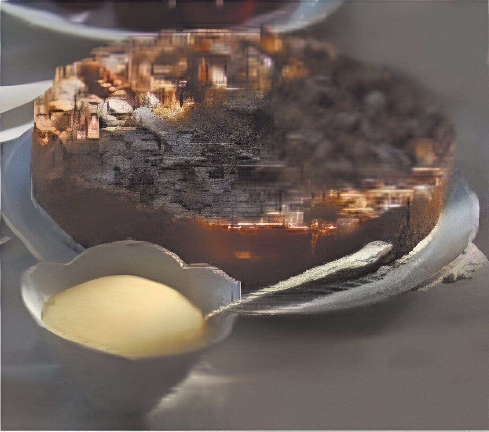

Apple Bavarian Torte (★★★★☆)
A classic European torte baked in a springform pan. Cream cheese, sliced almonds, and apples make this the perfect holiday treat (12 servings).
Ingredients
- ½ cup butter
- ½ cup white sugar
- ¼ teaspoon vanilla extract
- 1 cup all-purpose flour
- 1 (8 ounce) package cream cheese
- ¼ cup white sugar
- 1 egg
- ½ teaspoon vanilla extract
- 6 apples - peeled, cored, and sliced
- ¼ cup white sugar
- ½ teaspoon ground cinnamon
- ¼ cup sliced almonds
Directions
- Preheat oven to 450°F (230°C).
- Cream together butter, sugar, vanilla, and flour.
- Press crust mixture into the flat bottom of a 9-inch springform pan. Set aside.
- In a medium bowl, blend cream cheese and sugar. Beat in egg and vanilla. Pour cheese mixture over crust.
- Toss apples with sugar and cinnamon. Spread apple mixture over all.
- Bake for 10 minutes. Reduce heat to 400°F (200°C) and continue baking for 25 minutes.
- Sprinkle almonds over top of torte. Continue baking until lightly browned. Cool before removing from pan.